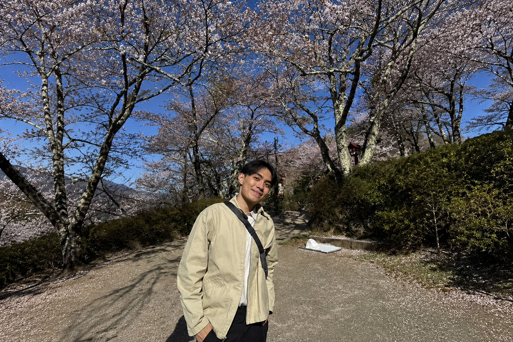

The Journey of Becoming
ผมเป็น Software Engineer ที่ชอบเขียนโค้ดและพัฒนาระบบใหม่ ๆ โดยเฉพาะการได้เปลี่ยนไอเดียให้กลายเป็นโปรแกรมที่ใช้งานได้จริง แต่ละโปรเจกต์ที่ทำก็มีทั้งเรื่องง่าย เรื่องยาก และปัญหาที่ไม่เคยเจอมาก่อน ซึ่งทำให้ผมได้เรียนรู้อะไรใหม่ ๆ อยู่ตลอด
แต่ถ้าว่างจากงาน ผมก็ชอบออกไปเที่ยว หาสถานที่ใหม่ ๆ ไปถ่ายรูป หรือบางวันก็แค่หาร้านกาแฟนั่งชิล ๆ นอกจากนี้ผมยังชอบออกกำลังกาย เพราะนอกจากจะได้ดูแลตัวเองแล้ว ยังเป็นอีกหนึ่งกิจกรรมที่ผมสนุกและอยากพัฒนาตัวเองให้ดีขึ้นเรื่อย ๆ
ผมเลยอยากใช้พื้นที่ตรงนี้เก็บเรื่องราวต่าง ๆ ของตัวเองไว้ ทั้งโปรเจกต์ที่เคยทำ สถานที่ที่เคยไป และประสบการณ์เล็ก ๆ น้อย ๆ ระหว่างทาง เผื่อวันหนึ่งได้กลับมาเปิดดูว่า ที่ผ่านมาเราได้ทำอะไร ได้เจออะไร และเดินทางมาไกลแค่ไหนแล้ว

ความมุ่งมั่นและความตั้งใจ จะพาเราเข้าใกล้ความฝัน